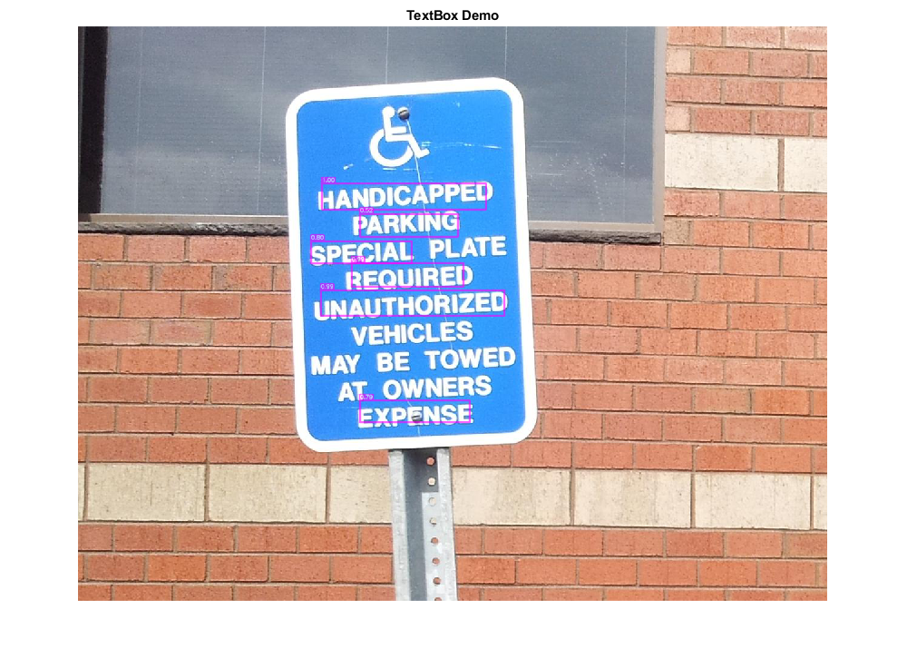

Scene Text Detection using CNN
References:
- Minghui Liao, Baoguang Shi, Xiang Bai, Xinggang Wang, Wenyu Liu. "TextBoxes: A Fast Text Detector with a Single Deep Neural Network", AAAI 2017. https://arxiv.org/abs/1611.06779
Sources:
load model
[net, blobOpts] = TextBoxes();
detect text
im = which('handicapSign.jpg'); assert(~isempty(im), 'specify input image'); img = cv.imread(im, 'Color',true); [bboxes, confs] = detectText(img, net, blobOpts); fprintf('%d text detections\n', size(bboxes,1));
post-processing
if true % non-maximum suppression ind = cv.Net.NMSBoxes(bboxes, confs, 0.3, 0.4); ind = ind + 1; % zero to one-based indices bboxes = bboxes(ind,:); confs = confs(ind); else % confidence thresholding idx = confs > 0.6; bboxes = bboxes(idx,:); confs = confs(idx); end fprintf('%d text detections after filtering\n', size(bboxes,1));
6 text detections after filtering
show results
for i=1:size(bboxes,1) img = insertAnnotation(img, bboxes(i,:), sprintf('%.2f', confs(i)), ... 'Color',[255 0 255], 'TextColor',[255 255 255], 'Thickness',2, 'FontScale',0.3); fprintf('text box: [%3d %3d %3d %3d], confidence: %3.0f%%\n', ... bboxes(i,:), confs(i)*100); end imshow(img), title('TextBox Demo')
text box: [403 259 272 44], confidence: 100% text box: [401 435 305 43], confidence: 99% text box: [452 390 186 40], confidence: 99% text box: [385 354 167 38], confidence: 80% text box: [466 618 182 37], confidence: 79% text box: [466 309 163 39], confidence: 52% Warning: Image is too big to fit on screen; displaying at 67%
Helper functions
function [rects, confs] = detectText(img, net, blobOpts) %DETECTTEXT Detect text on input image % detect text net.setInput(cv.Net.blobFromImages(img, blobOpts{:})); dets = net.forward(); % SSD output is 1-by-1-by-ndetections-by-7 % d = [img_id, class_id, confidence, left, top, right, bottom] dets = permute(dets, [3 4 2 1]); % filter dets = dets(dets(:,2) == 1,:); % 0: background, 1: text % adjust relative coordinates to image size sz = [size(img,2) size(img,1)]; dets(:,4:7) = bsxfun(@times, dets(:,4:7), [sz sz]); % output detections (clamp coords) rects = cv.Rect.from2points(dets(:,4:5), dets(:,6:7)); rects = cv.Rect.intersect(rects, [0 0 sz]); rects = round(rects); confs = dets(:,3); end function img = insertAnnotation(img, rect, str, varargin) % See also: insertObjectAnnotation, insertShape, insertText p = inputParser(); p.addParameter('Alpha', 0.6); p.addParameter('Thickness', 1); p.addParameter('Color', [255 255 0]); p.addParameter('TextColor', [0 0 0]); p.addParameter('FontFace', 'HersheySimplex'); p.addParameter('FontScale', 0.4); p.addParameter('AntiAlias', true); p.addParameter('Shape', 'rectangle'); p.parse(varargin{:}); opts = p.Results; opts.Shape = validatestring(opts.Shape, {'rectangle','circle'}); thick = 1; [sz,b] = cv.getTextSize(str, 'Thickness',thick, ... 'FontFace',opts.FontFace, 'FontScale',opts.FontScale); txt_rect = [rect(1), rect(2)-sz(2)-b, sz(1), sz(2)+b]; txt_orig = [rect(1), rect(2)-b]; if opts.AntiAlias alias = {'LineType','AA'}; else alias = {'LineType',8}; end overlay = img; if strcmp(opts.Shape, 'rectangle') overlay = cv.rectangle(overlay, rect, ... 'Color',opts.Color, 'Thickness',opts.Thickness, alias{:}); else c = rect(1:2) + rect(3:4)/2; r = max(rect(3:4)/2); overlay = cv.circle(overlay, c, r, ... 'Color',opts.Color, 'Thickness',opts.Thickness, alias{:}); end overlay = cv.rectangle(overlay, txt_rect, ... 'Color',opts.Color, 'Thickness','Filled', alias{:}); if opts.Thickness > 1 overlay = cv.rectangle(overlay, txt_rect, ... 'Color',opts.Color, 'Thickness',opts.Thickness, alias{:}); end overlay = cv.putText(overlay, str, txt_orig, ... 'FontFace',opts.FontFace, 'FontScale',opts.FontScale, ... 'Color',opts.TextColor, 'Thickness',thick, alias{:}); img = cv.addWeighted(img,1-opts.Alpha, overlay,opts.Alpha, 0); end
70 text detections
Pretrained models
function dname = get_dnn_dir(dname) %GET_DNN_DIR Path to model files, and show where to get them if missing dname = fullfile(mexopencv.root(), 'test', 'dnn', dname); b = isdir(dname); if ~b % display help of calling function % (assumed to be a local function in current file) st = dbstack(1); help([mfilename() filemarker() st(1).name]) end assert(b, 'Missing model: %s', dname); end function [net, blobOpts] = TextBoxes() %TEXTDETECTOR Text detector model [Caffe] % % homepage = https://github.com/MhLiao/TextBoxes % % ## Model % % file = test/dnn/TextBoxes/textbox.prototxt % url = https://github.com/opencv/opencv_contrib/raw/3.4.1/modules/text/samples/textbox.prototxt % hash = c294416fe6d156b9383342d62b9158ab707170c0 % % ## Weights % % file = test/dnn/TextBoxes/TextBoxes_icdar13.caffemodel % url = https://www.dropbox.com/s/g8pjzv2de9gty8g/TextBoxes_icdar13.caffemodel?dl=0 % hash = e4b32aef3db3d66fec0630c96006e10999f785c4 % size = 90.68 MB % dname = get_dnn_dir('TextBoxes'); net = cv.Net('Caffe', ... fullfile(dname, 'textbox.prototxt'), ... fullfile(dname, 'TextBoxes_icdar13.caffemodel')); blobOpts = {'SwapRB',true, 'Crop',false, 'Size',[300 300], 'Mean',[104 117 123]}; end